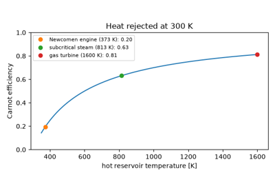
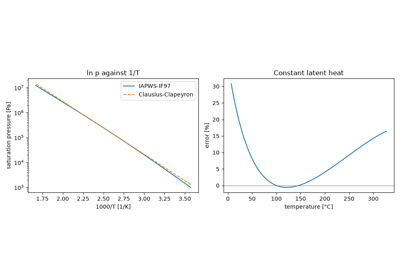
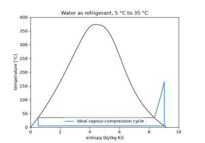
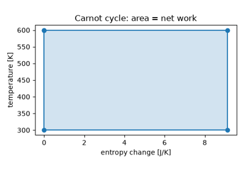
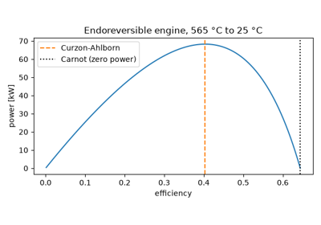
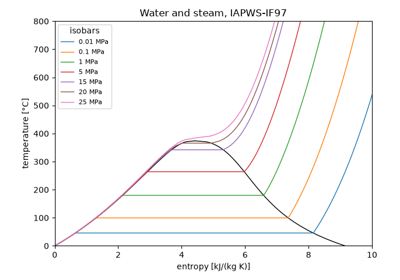

Breakthroughs in Thermodynamics#
“The energy of the universe is constant. The entropy of the universe tends to a maximum.” – Rudolf Clausius, 1865
Thermodynamics began as the theory of the steam engine and became a science
of energy itself. Carnot’s question of how much work heat can give led,
through Joule’s experiments, to the first law, and through Clausius and
Kelvin to the second law and entropy. Engineers turned the laws into cycles
for every kind of engine, refrigerator and heat pump. Equations of state and
vapour-pressure laws described the working fluids, and exergy put all losses
in one currency. The entries trace the ideas behind
engineeringkit.thermodynamics. Each links to the implementing
function and to a gallery example devoted to it.
1824 – Carnot’s Réflexions#
Sadi Carnot, a young French engineer officer, asked whether the work of a steam engine had a limit. He compared heat falling from a hot body to a cold one with water falling over a wheel, and argued that a reversible engine between two temperatures is the best possible, whatever its working substance. If any engine did better, it could drive a reversible engine backwards and move heat from cold to hot for nothing. The little book was almost ignored until Clapeyron and then Kelvin took it up. In modern form the bound is \(\eta = 1 - T_c/T_h\).
Implementation: engineeringkit.thermodynamics.carnot_efficiency(),
engineeringkit.thermodynamics.heat_engine_work() and
engineeringkit.thermodynamics.thermal_efficiency(). The example runs
Carnot’s argument with numbers and plots the bound against source
temperature.
References: S. Carnot, Réflexions sur la puissance motrice du feu (Paris: Bachelier, 1824).

Carnot’s Réflexions: no engine beats the reversible one (1824)
1834 – Clapeyron’s Ideal Gas Law#
Émile Clapeyron restated Carnot’s argument with a cycle drawn on pressure and volume axes, the indicator diagram of the steam engineer. To compute the work of a gas cycle he combined Boyle and Mariotte’s law with Gay-Lussac’s law of expansion into \(pv = R(267 + t)\). With Regnault’s better coefficient and absolute temperature it became \(pV = nRT\), the equation of state against which every real fluid is still measured.
Implementation: engineeringkit.thermodynamics.ideal_gas_pressure()
and engineeringkit.thermodynamics.ideal_gas_temperature(). The example
extrapolates a constant-volume gas thermometer to the absolute zero.
References: É. Clapeyron, “Mémoire sur la puissance motrice de la chaleur,” J. École Polytechnique 14 (1834) 153-190.
1834-1850 – The Clausius-Clapeyron Relation#
In the same memoir Clapeyron applied Carnot’s reasoning to an infinitesimal cycle of boiling and condensing. The slope of the vapour-pressure curve came out fixed by the latent heat and the change of volume, \(\mathrm{d}p/\mathrm{d}T = h_{fg}/[T(v_g - v_f)]\). Clausius rederived it in 1850 from the new mechanical theory of heat. Neglecting the liquid volume and treating the vapour as an ideal gas, he integrated it to make \(\ln p\) linear in \(1/T\).
Implementation:
engineeringkit.thermodynamics.clausius_clapeyron_pressure(). The
example checks the exact slope against IAPWS-IF97 steam and finds the boiling
point on Everest.
References: É. Clapeyron (1834), as above; R. Clausius, “Über die bewegende Kraft der Wärme,” Ann. Phys. 79 (1850) 368-397, 500-524.

The Clausius-Clapeyron relation (1834-1850)
1834 – Perkins’s Vapour-Compression Refrigerator#
Jacob Perkins, an American inventor working in London, patented a closed machine that evaporated a volatile liquid at low pressure to absorb heat, compressed the vapour and condensed it under pressure, then let the liquid back through a valve. Every domestic refrigerator and air conditioner still works this way. The coefficient of performance, heat removed per unit of work, is bounded by Carnot’s \(T_c/(T_h - T_c)\).
Implementation: engineeringkit.thermodynamics.refrigeration_cop()
and engineeringkit.thermodynamics.carnot_cop_refrigerator(). The
example runs the ideal cycle with water as refrigerant on IF97 properties.
References: J. Perkins, “Apparatus and means for producing ice, and in cooling fluids,” British Patent 6662 (1834).

Perkins’s vapour-compression refrigerator (1834)
1843-1850 – Joule and the First Law#
James Prescott Joule, a Manchester brewer’s son, measured the heat produced by electric currents, by compressing air, and finally by falling weights that stirred water with a paddle wheel. Each time the same work gave the same heat: 772 foot-pounds per British thermal unit, about 4.16 J/cal. Heat and work became two forms of one conserved quantity, and Clausius wrote the balance as \(Q = \Delta U + W\).
Implementation: engineeringkit.thermodynamics.first_law_heat(),
engineeringkit.thermodynamics.specific_internal_energy_ideal_gas() and
engineeringkit.thermodynamics.specific_enthalpy_ideal_gas(). The
example redoes the paddle-wheel balance and converts Joule’s number to SI.
References: J. P. Joule, “On the calorific effects of magneto-electricity, and on the mechanical value of heat,” Phil. Mag. 23 (1843) 263-276, 347-355, 435-443; “On the mechanical equivalent of heat,” Phil. Trans. R. Soc. 140 (1850) 61-82.
1852 – Kelvin’s Heat Pump#
William Thomson saw that a reversed heat engine could warm a building with heat taken from the colder outside air, delivering more heat than the work spent on it. He proposed an air machine for the purpose and argued that it would heat with less fuel than burning that fuel directly. The heat pump’s coefficient of performance is bounded by \(T_h/(T_h - T_c)\), one more than the refrigerator’s.
Implementation: engineeringkit.thermodynamics.heat_pump_cop() and
engineeringkit.thermodynamics.carnot_cop_heat_pump(). The example
works out Kelvin’s air cycle as a reversed Brayton cycle and repeats his
economy argument.
References: W. Thomson, “On the economy of the heating or cooling of buildings by means of currents of air,” Proc. Phil. Soc. Glasgow 3 (1852) 269-272.
1852 – The Joule-Thomson Effect#
Joule and Thomson forced gases steadily through a porous plug and found them slightly cooler on the far side. Air cooled by about a quarter of a kelvin per atmosphere and carbon dioxide by about one, while hydrogen warmed. The throttled flow keeps its enthalpy, so the effect measures how far a real gas departs from ideal. Below an inversion temperature throttling cools the gas, the basis of Linde’s air liquefier of 1895.
Implementation:
engineeringkit.thermodynamics.joule_thomson_coefficient_vdw(). The
example compares nitrogen, carbon dioxide and hydrogen and integrates a
throttle valve.
References: J. P. Joule and W. Thomson, “On the thermal effects experienced by air in rushing through small apertures,” Phil. Mag. 4 (1852) 481-492.
1854-1865 – Clausius’s Inequality and Entropy#
Rudolf Clausius showed in 1854 that around any cycle the heat received, divided by the temperature at which it crosses the boundary, sums to zero for a reversible cycle and is negative otherwise. So \(\delta Q_{rev}/T\) is the change of a property of state, which in 1865 he named entropy, from the Greek for transformation. The second law became a statement about entropy: in an isolated system it never decreases.
Implementation: engineeringkit.thermodynamics.clausius_inequality(),
engineeringkit.thermodynamics.entropy_change_isothermal_ideal_gas(),
engineeringkit.thermodynamics.reversible_isothermal_work_ideal_gas(),
engineeringkit.thermodynamics.isentropic_pressure_volume() and
engineeringkit.thermodynamics.isentropic_temperature_ratio(). The
example builds an ideal-gas Carnot cycle and makes it irreversible.
References: R. Clausius, “Über eine veränderte Form des zweiten Hauptsatzes der mechanischen Wärmetheorie,” Ann. Phys. 93 (1854) 481-506; “Über verschiedene für die Anwendung bequeme Formen der Hauptgleichungen der mechanischen Wärmetheorie,” Ann. Phys. 125 (1865) 353-400.

Clausius’s inequality and entropy (1854-1865)
1859 – Rankine’s Steam Cycle#
William Rankine’s Manual of the Steam Engine was the first textbook of engineering thermodynamics. It analysed the steam plant as a cycle of pump, boiler, engine and condenser. Pumping the water as a liquid costs about 1% of the engine’s work, and the condenser lets the steam expand to a vacuum. With superheat and reheat added, the Rankine cycle still produces most of the world’s electricity, from coal, nuclear and solar thermal plants.
Implementation:
engineeringkit.thermodynamics.rankine_ideal_efficiency(), with states
from engineeringkit.thermodynamics.steam_properties(). The example
computes a 10 MPa, 500 °C plant and plots it on the T-s diagram.
References: W. J. M. Rankine, A Manual of the Steam Engine and Other Prime Movers (London: Griffin, 1859).
1872 – Brayton’s Constant-Pressure Cycle#
George Brayton’s “Ready Motor” compressed air, burned fuel in it at constant pressure and expanded the hot gas in a second cylinder. Joule had proposed the same cycle for an air engine. The engine lost out to Otto’s, but the cycle of isentropic compression, constant-pressure heating, isentropic expansion and constant-pressure cooling is the cycle of every gas turbine and jet engine. Its ideal efficiency depends only on the pressure ratio.
Implementation: engineeringkit.thermodynamics.brayton_efficiency().
The example rebuilds the efficiency from the four state temperatures.
References: G. B. Brayton, “Improvement in gas-engines,” U.S. Patent 125,166 (1872).
1873 – Van der Waals’s Equation of State#
Andrews had shown in 1869 that carbon dioxide has a critical temperature above which it cannot be liquefied. In his Leiden thesis Johannes van der Waals corrected the ideal gas for the volume of the molecules and their mutual attraction, \(p = RT/(v - b) - a/v^2\). One equation then covers gas and liquid and predicts the critical point. Maxwell’s equal-area rule (1875) gives the vapour pressure. Van der Waals received the 1910 Nobel Prize in Physics.
Implementation:
engineeringkit.thermodynamics.van_der_waals_pressure() and
engineeringkit.thermodynamics.van_der_waals_critical_point(). The
example draws carbon dioxide’s isotherms with Maxwell’s construction.
References: J. D. van der Waals, Over de continuïteit van den gas- en vloeistoftoestand, thesis, Leiden (1873).
1876 – Otto’s Four-Stroke Cycle#
Nicolaus Otto’s engine compressed its charge of gas and air before igniting it, a principle Beau de Rochas had published in 1862. Its four strokes of intake, compression, power and exhaust are idealized as the air-standard Otto cycle, with heat added and rejected at constant volume. The efficiency \(1 - r^{1-\gamma}\) depends only on the compression ratio, and knock sets the limit on that ratio.
Implementation: engineeringkit.thermodynamics.otto_efficiency() and
engineeringkit.thermodynamics.OttoCycle. The example draws the
cycle on the p-v diagram and checks the efficiency from the four states.
References: N. A. Otto, “Gas motor engine,” U.S. Patent 194,047 (1877).
1888 – Antoine’s Vapour-Pressure Equation#
Measured vapour pressures bend away from the straight Clausius-Clapeyron line because the latent heat falls with temperature. Charles Antoine added a third constant, \(\log_{10} p = A - B/(C + T)\), which fits most liquids within a fraction of a percent over a wide range. Tables of Antoine constants remain a standard tool of chemical engineering.
Implementation:
engineeringkit.thermodynamics.antoine_vapor_pressure(). The example
fits Antoine and Clausius-Clapeyron to IF97 water and compares their errors.
References: C. Antoine, “Tensions des vapeurs; nouvelle relation entre les tensions et les températures,” C. R. Acad. Sci. 107 (1888) 681-684, 778-780, 836-837.
1889-1905 – Gouy and Stodola: Lost Work#
Georges Gouy defined the useful energy of a system in surroundings at \(T_0\) and showed that every irreversibility destroys work equal to \(T_0\) times the entropy it generates. Aurel Stodola found the same result for steam turbines. The Gouy-Stodola theorem lets an engineer rank the losses of a plant, from heat crossing temperature differences to throttling and friction, in one currency.
Implementation:
engineeringkit.thermodynamics.exergy_destruction(). The example prices
heat transfer, a throttling valve and an imperfect turbine.
References: G. Gouy, “Sur l’énergie utilisable,” J. Phys. Théor. Appl. 8 (1889) 501-518; A. Stodola, Die Dampfturbinen, 3rd ed. (Berlin: Springer, 1905).
1893 – Diesel’s Compression-Ignition Cycle#
Rudolf Diesel set out to approach Carnot’s efficiency by compressing air alone until injected fuel ignites by itself. With no fuel present during compression the engine cannot knock, so it can use compression ratios of 15 to 22. The air-standard Diesel cycle adds heat at constant pressure up to a cutoff ratio. At the same compression ratio it is less efficient than Otto’s cycle, but its higher ratios make it more efficient in practice.
Implementation: engineeringkit.thermodynamics.diesel_efficiency().
The example compares Diesel and Otto cycles at their practical compression
ratios.
References: R. Diesel, Theorie und Konstruktion eines rationellen Wärmemotors (Berlin: Springer, 1893).
1911 – Carrier’s Psychrometric Chart#
Willis Carrier controlled the humidity of a Brooklyn printing plant in 1902 by cooling the air below its dew point and reheating it. His paper of 1911 treated moist air as an ideal mixture of dry air and water vapour. It gave the formulae and the chart of humidity ratio against temperature that air-conditioning engineers still use.
Implementation: engineeringkit.thermodynamics.humidity_ratio(),
engineeringkit.thermodynamics.relative_humidity() and
engineeringkit.thermodynamics.dew_point(). The example draws the chart
and follows air through a cooling coil.
References: W. H. Carrier, “Rational psychrometric formulae,” Trans. ASME 33 (1911) 1005-1053.
1956 – Rant Names Exergy#
Gibbs’s available energy, Gouy’s useful energy and Keenan’s availability were the same quantity under different names. Zoran Rant proposed one short word, exergy, for the work that energy could deliver when brought into equilibrium with the environment. For heat at \(T_s\) it is \(Q(1 - T_0/T_s)\). Exergy balances show where work potential is lost, which energy balances cannot.
Implementation: engineeringkit.thermodynamics.exergy_heat(). The
example plots the quality of heat against temperature and draws up the
exergy balance of a gas boiler.
References: Z. Rant, “Exergie, ein neues Wort für ‘technische Arbeitsfähigkeit’,” Forsch. Ingenieurwes. 22 (1956) 36-37.
1975 – Curzon and Ahlborn: Efficiency at Maximum Power#
A Carnot engine reaches its efficiency only by running infinitely slowly. Frank Curzon and Boye Ahlborn let a reversible engine exchange heat with its reservoirs through finite conductances and maximized the power. The efficiency at maximum power is \(1 - \sqrt{T_c/T_h}\), whatever the conductances. Novikov and Chambadal had found it in 1957. It matches real power stations better than Carnot’s bound and founded finite-time thermodynamics.
Implementation:
engineeringkit.thermodynamics.curzon_ahlborn_efficiency(). The example
maximizes the power numerically and compares three power stations.
References: F. L. Curzon and B. Ahlborn, “Efficiency of a Carnot engine at maximum power output,” Am. J. Phys. 43 (1975) 22-24.

Curzon and Ahlborn: efficiency at maximum power (1975)
1997 – IAPWS-IF97 Steam Properties#
The International Association for the Properties of Water and Steam replaced the 1967 industrial formulation with IAPWS-IF97, developed under Wolfgang Wagner. Separate fast equations cover five regions. In the compressed liquid and the vapour each is a dimensionless Gibbs free energy from which every property follows by differentiation. The release gives nine-digit verification values, and every power-plant calculation since uses it.
Implementation: engineeringkit.thermodynamics.steam_properties(),
engineeringkit.thermodynamics.saturation_pressure(),
engineeringkit.thermodynamics.saturation_temperature() and
engineeringkit.thermodynamics.SteamState (regions 1 to 4). The
example checks the verification values and draws the T-s diagram.
References: W. Wagner et al., “The IAPWS Industrial Formulation 1997 for the thermodynamic properties of water and steam,” J. Eng. Gas Turbines Power 122 (2000) 150-182.

IAPWS-IF97: the properties of water and steam (1997)